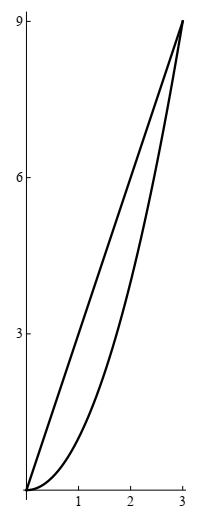
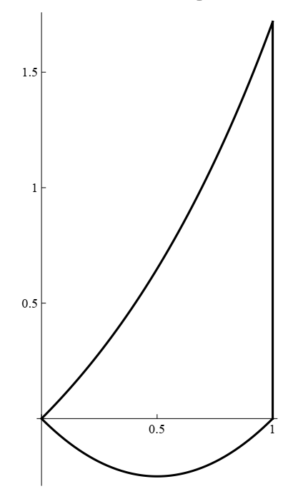
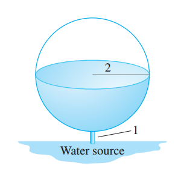
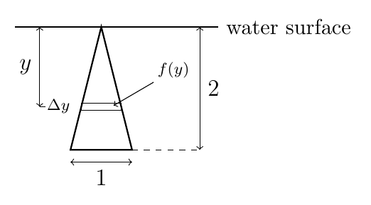
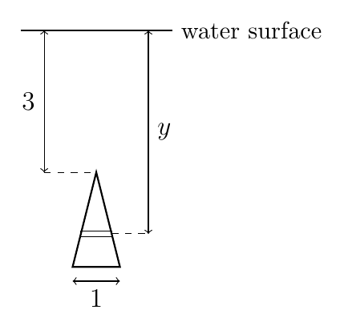
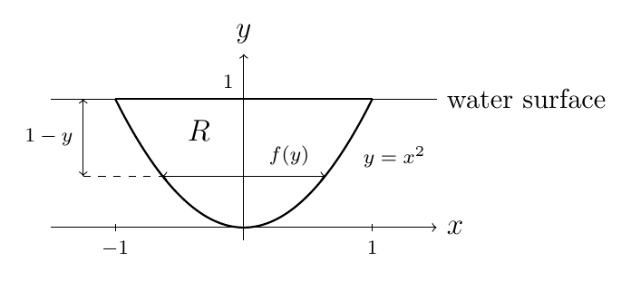
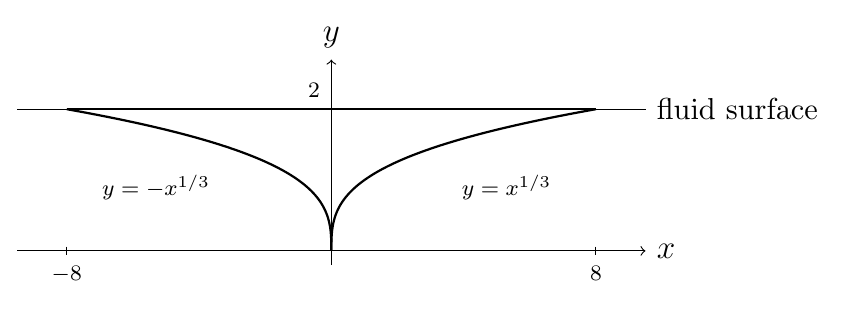
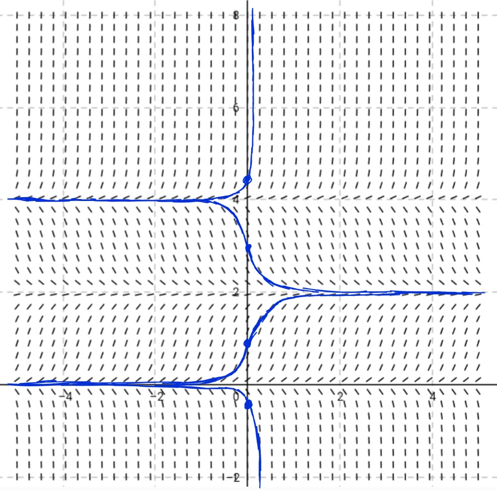

- (a)Sketch a graph of this region.
SolutionHide solution
The curves meet where \(x^2 = 3x\), at \(x = 0\) and \(x = 3\); the line is on top.

- (b)Set up an integral to find the area of this region.
SolutionHide solution
\(\displaystyle \int_0^3 \left(3x - x^2\right)dx\)
- (c)Set up an integral to find the volume of the solid obtained when this region is rotated around the \(y\)-axis.
SolutionHide solution
Shells\(\displaystyle \int_0^3 2\pi x\left(3x - x^2\right)dx\)
Washers\(\displaystyle \int_0^9 \pi\left(\left(\sqrt{y}\right)^2 - \left(\frac{y}{3}\right)^2\right)dy\)
- (d)Set up an integral to find the volume of the solid obtained when this region is rotated around the \(x\)-axis.
SolutionHide solution
Washers\(\displaystyle \int_0^3 \pi\left((3x)^2 - \left(x^2\right)^2\right)dx\)
Shells\(\displaystyle \int_0^9 2\pi y\left(\sqrt{y} - \frac{y}{3}\right)dy\)
- (e)Set up an integral to find the volume of the solid obtained when this region is rotated around the line \(x = 4\).
SolutionHide solution
Shells\(\displaystyle \int_0^3 2\pi(4 - x)\left(3x - x^2\right)dx\)
Washers\(\displaystyle \int_0^9 \pi\left(\left(4 - \frac{y}{3}\right)^2 - \left(4 - \sqrt{y}\right)^2\right)dy\)
- (f)Set up an integral to find the volume of the solid obtained when this region is rotated around the line \(y = 10\).
SolutionHide solution
Washers\(\displaystyle \int_0^3 \pi\left(\left(10 - x^2\right)^2 - (10 - 3x)^2\right)dx\)
Shells\(\displaystyle \int_0^9 2\pi(10 - y)\left(\sqrt{y} - \frac{y}{3}\right)dy\)
What the exam covers
Area between curves, volume, work, hydrostatic force, average value, arc length, differential equations, slope fields, separable equations, and initial value problems.
On the exam, some questions will ask you to set up an integral (without calculating its value), while other questions will ask you to find the value of the integral. For volume questions, be prepared to use both disks/washers and cylindrical shells.
Try each problem before opening its solution. Where both methods work, the solution shows the washer and shell set-ups side by side.
Area and volume
- (a)Sketch a graph of this region.
SolutionHide solution
Both curves pass through the origin; on \(0 \le x \le 1\) the curve \(y = e^x - 1\) is on top.

- (b)Set up an integral to find the area of this region.
SolutionHide solution
\(\displaystyle \int_0^1 \left(e^x - 1 - \left(x^2 - x\right)\right)dx\)
- (c)Set up an integral to find the volume of the solid obtained when this region is rotated around the \(y\)-axis.
SolutionHide solution
Shells\(\displaystyle \int_0^1 2\pi x\left(e^x - 1 - \left(x^2 - x\right)\right)dx\)
- (d)Set up an integral to find the volume of the solid obtained when this region is rotated around the line \(x = 2\).
SolutionHide solution
Shells\(\displaystyle \int_0^1 2\pi(2 - x)\left(e^x - 1 - \left(x^2 - x\right)\right)dx\)
- (e)Set up an integral to find the volume of the solid obtained when this region is rotated around the line \(y = -1\).
SolutionHide solution
Washers\(\displaystyle \int_0^1 \pi\left(\left(e^x - 1 + 1\right)^2 - \left(x^2 - x + 1\right)^2\right)dx\)
SolutionHide solution
An equilateral triangle with side \(s = \sqrt{x}\) has area \(\frac{\sqrt{3}}{4}s^2 = \frac{\sqrt{3}}{4}x\).
\(\displaystyle V = \int_0^4 \frac{\sqrt{3}}{4}\,x\,dx = 2\sqrt{3}\)
SolutionHide solution
The side of the square at \(x\) is \(2y = \frac{8}{3}\sqrt{9 - x^2}\), so its area is \(\frac{64}{9}(9 - x^2)\).
\(\displaystyle V = \int_{-3}^{3}\left(64 - \frac{64}{9}x^2\right)dx = 256\)
Arc length and average value
SolutionHide solution
\(\displaystyle L = \int_0^{\sqrt{2}}\sqrt{1 + \frac{x^2}{2 - x^2}}\,dx = \int_0^{\sqrt{2}}\frac{\sqrt{2}}{\sqrt{2 - x^2}}\,dx = \frac{\pi}{\sqrt{2}}\)
(Check: this is a quarter of a circle of radius \(\sqrt{2}\).)
- (a)\(y = \dfrac{x^3}{3} + \dfrac{1}{4x}\), \(1 \le x \le 2\)
SolutionHide solution
\(1 + (y')^2 = \left(x^2 + \frac{1}{4x^2}\right)^2\), a perfect square.
\(\displaystyle L = \int_1^2\left(x^2 + \frac{1}{4x^2}\right)dx = \frac{59}{24}\)
- (b)\(x = \dfrac{1}{3}\sqrt{y}\,(y - 3)\), \(1 \le y \le 9\)
SolutionHide solution
\(1 + (x')^2 = \frac{1}{4}\left(y^{1/2} + y^{-1/2}\right)^2\).
\(\displaystyle L = \int_1^9 \frac{1}{2}\left(y^{1/2} + y^{-1/2}\right)dy = \frac{32}{3}\)
- (c)\(y = \ln(\sec x)\), \(0 \le x \le \dfrac{\pi}{4}\)
SolutionHide solution
\(y' = \tan x\), so \(\sqrt{1 + \tan^2 x} = \sec x\).
\(\displaystyle L = \int_0^{\pi/4}\sec x\,dx = \ln\!\left(1 + \sqrt{2}\right) = -\frac{1}{2}\ln\!\left(3 - 2\sqrt{2}\right)\)
SolutionHide solution
\(\displaystyle f_{\text{ave}} = \frac{4}{\pi}\int_0^{\pi/4}\tan x\,dx\)
(Its value is \(\frac{4}{\pi}\ln\sqrt{2} = \frac{2\ln 2}{\pi}\).)
SolutionHide solution
\(\displaystyle f_{\text{ave}} = \frac{1}{4}\int_1^5\sqrt{x^2 + x + 1}\,dx\)
Work
SolutionHide solution
\(12 = \int_0^{0.2} kx\,dx = 0.02k\), so \(k = 600\) N/m.
\(\displaystyle W = \int_0^{0.06} 600x\,dx = 1.08 \text{ J}\)
SolutionHide solution
\(50 = k(0.05)\), so \(k = 1000\) N/m. Measure \(x\) from equilibrium: 22 cm and 24 cm are \(x = 0.07\) and \(x = 0.09\).
\(\displaystyle W = \int_{0.07}^{0.09} 1000x\,dx = 1.6 \text{ J}\)

- (a)Calculate the work required to fill the tank.
SolutionHide solution
Let \(y\) be height above the bottom of the tank. A slice at height \(y\) has area \(\pi(4y - y^2)\) and is lifted \(y + 1\) meters.
\(\displaystyle W = \rho g\pi\int_0^4 (y + 1)\left(4y - y^2\right)dy = 32\rho g\pi \text{ J} \approx 985{,}203 \text{ J}\)
- (b)Calculate the work \(W(h)\) required to fill the tank to level \(h\) meters in the sphere (\(h = 0\) is the bottom of the tank).
SolutionHide solution
\(\displaystyle W(h) = \rho g\pi\int_0^h (y + 1)\left(4y - y^2\right)dy = \rho g\pi\left(2h^2 + h^3 - \frac{h^4}{4}\right)\)
SolutionHide solution
At height \(y\) the elapsed time is \(y/100\) min, so the mass is \(20 + 100 - 40\cdot\frac{y}{100} = 120 - 0.4y\) kg.
\(\displaystyle W = \int_0^{100}(120 - 0.4y)\,g\,dy = 10000g \text{ J} \approx 98{,}000 \text{ J}\)
SolutionHide solution
Measure \(y\) as depth below the top of the well. The bucket starts at \(y = B\); when it is at depth \(y\) it has been rising for \(\frac{B - y}{D}\) seconds.
\(\displaystyle W_{\text{bucket}} = ABg, \qquad W_{\text{rope}} = \int_0^B \frac{C}{B}\,g\,y\,dy\)
If \(E \lt \frac{FB}{D}\), the bucket runs out of water before reaching the top, at depth \(B - \frac{DE}{F}\):
\(\displaystyle W_{\text{water}} = \int_{B - \frac{DE}{F}}^{B}\left(E - F\,\frac{B - y}{D}\right)g\,dy\)
If \(E \ge \frac{FB}{D}\):
\(\displaystyle W_{\text{water}} = \int_0^B\left(E - F\,\frac{B - y}{D}\right)g\,dy\)
Total work: \(W = W_{\text{bucket}} + W_{\text{rope}} + W_{\text{water}}\).
Hydrostatic force

- (a)Show that the width of the triangle at depth \(y\) is \(f(y) = \frac{1}{2}y\).
SolutionHide solution
By similar triangles, \(\frac{f(y)}{y} = \frac{1}{2}\), so \(f(y) = \frac{1}{2}y\).
- (b)Consider a thin horizontal strip of thickness \(\Delta y\) at depth \(y\). Explain why the fluid force on one side of this strip is approximately \(\rho g\,\frac{1}{2}y^2\,\Delta y\).
SolutionHide solution
The pressure at depth \(y\) is \(\rho g y\), and the strip's area is about \(f(y)\,\Delta y = \frac{1}{2}y\,\Delta y\). Force \(=\) pressure \(\times\) area \(\approx \rho g y\cdot\frac{1}{2}y\,\Delta y = \rho g\,\frac{1}{2}y^2\,\Delta y\).
- (c)Write a Riemann sum that approximates the total fluid force \(F\) on one side of the plate, and identify the integral it converges to.
SolutionHide solution
\(\displaystyle F \approx \sum_{j=1}^{N}\rho g\,\frac{y_j^2}{2}\,\Delta y \;\longrightarrow\; \frac{\rho g}{2}\int_0^2 y^2\,dy \quad (N \to \infty)\)
- (d)Calculate \(F\).
SolutionHide solution
\(\displaystyle F = \frac{39200}{3} \approx 13{,}067 \text{ N}\)

SolutionHide solution
(a) \(f(y) = \frac{1}{2}(y - 3)\) for \(3 \le y \le 5\).
(b) Strip force \(\approx \rho g y\cdot\frac{1}{2}(y - 3)\,\Delta y = \frac{1}{2}\rho g\,y(y - 3)\,\Delta y\).
(c) \(\displaystyle F \approx \sum_{j=1}^{N}\rho g\,\frac{y_j^2 - 3y_j}{2}\,\Delta y \;\longrightarrow\; \frac{\rho g}{2}\int_3^5\left(y^2 - 3y\right)dy\)
(d) \(\displaystyle F = \frac{127400}{3} \approx 42{,}467 \text{ N}\)

- (a)Show that the width of \(R\) at height \(y\) is \(f(y) = 2\sqrt{y}\) and that the fluid force on one side of a horizontal strip of thickness \(\Delta y\) at height \(y\) is approximately \(\rho g\,2y^{1/2}(1 - y)\,\Delta y\).
SolutionHide solution
At height \(y\) the plate runs from \(x = -\sqrt{y}\) to \(x = \sqrt{y}\), so its width is \(2\sqrt{y}\). The water surface is at \(y = 1\), so the strip is at depth \(1 - y\). Force \(\approx \rho g(1 - y)\cdot 2\sqrt{y}\,\Delta y\).
- (b)Write a Riemann sum that approximates the fluid force \(F\) on one side of \(R\), and use it to explain why \(\displaystyle F = \rho g\int_0^1 2y^{1/2}(1 - y)\,dy\).
SolutionHide solution
\(\displaystyle F \approx \sum_{j=1}^{N}\rho g\,2\sqrt{y_j}\,(1 - y_j)\,\Delta y\)
which converges to the integral as \(N \to \infty\).
- (c)Calculate \(F\).
SolutionHide solution
\(\displaystyle F = \frac{8}{15}\rho g = \frac{15680}{3} \approx 5{,}227 \text{ N}\)
SolutionHide solution
\(\displaystyle F = \rho g\int_2^5 y\cdot\frac{2}{1 + y^2}\,dy = 8330\ln\frac{26}{5} \approx 13{,}733 \text{ N}\)

SolutionHide solution
At height \(y\) the plate runs from \(x = -y^3\) to \(x = y^3\), so the width is \(2y^3\); the depth is \(2 - y\).
\(\displaystyle F = \rho g\int_0^2(2 - y)\left(2y^3\right)dy = \frac{16\rho g}{5} = 37{,}632 \text{ N}\)
Volume of an unbounded region
SolutionHide solution
\(\displaystyle V = \pi\int_{-\infty}^{\infty}\frac{dx}{(1 + x^2)^2} = \frac{\pi^2}{2}\)
(Use \(x = \tan\theta\): \(\int_{-\pi/2}^{\pi/2}\cos^2\theta\,d\theta = \frac{\pi}{2}\).)
Differential equations
- (a)Sketch (roughly) the slope field for the equation.
SolutionHide solution
Equilibrium solutions: \(y = 0\), \(y = 2\), \(y = 4\) (horizontal slopes).
Slopes are positive for \(0 \lt y \lt 2\) and \(y \gt 4\), and negative for \(y \lt 0\) and \(2 \lt y \lt 4\). See the figure in part (b).
- (b)Sketch the graphs of the solutions that satisfy the given initial conditions.
- \(y(0) = -0.3\)
- \(y(0) = 1\)
- \(y(0) = 3\)
- \(y(0) = 4.3\)
Solution to (a) and (b)Hide solution to (a) and (b)

- (c)If the initial condition is \(y(0) = c\), for what values of \(c\) is \(\displaystyle\lim_{t\to\infty}y(t)\) finite? What are these finite limits?
SolutionHide solution
If \(0 \lt c \lt 4\), then \(\displaystyle\lim_{t\to\infty}y(t) = 2\). If \(c = 0\) or \(c = 4\), then \(\displaystyle\lim_{t\to\infty}y(t) = c\).
For \(c \lt 0\) or \(c \gt 4\), the solution is unbounded.
- (a)\(y' = x/y\), \(y(0) = -3\)
SolutionHide solution
\(y\,dy = x\,dx \Rightarrow y^2 = x^2 + 9\); choose the negative root because \(y(0) \lt 0\).
\(\displaystyle y = -\sqrt{x^2 + 9}\)
- (b)\(\dfrac{dy}{dx} = \dfrac{\ln x}{xy}\), \(y(1) = 2\)
SolutionHide solution
\(y\,dy = \frac{\ln x}{x}\,dx \Rightarrow \frac{y^2}{2} = \frac{(\ln x)^2}{2} + C\).
\(\displaystyle y = \sqrt{(\ln x)^2 + 4}\)
- (c)\(y' = \dfrac{xy\sin x}{y + 1}\), \(y(0) = 1\)
SolutionHide solution
\(\left(1 + \frac{1}{y}\right)dy = x\sin x\,dx\) (integrate the right side by parts).
\(\displaystyle y + \ln|y| = -x\cos x + \sin x + 1\)
- (d)\(\dfrac{dP}{dt} = \sqrt{Pt}\), \(P(1) = 2\)
SolutionHide solution
\(P^{-1/2}\,dP = t^{1/2}\,dt \Rightarrow 2\sqrt{P} = \frac{2}{3}t^{3/2} + C\).
\(\displaystyle P(t) = \left(\frac{1}{3}t^{3/2} + \sqrt{2} - \frac{1}{3}\right)^2\)
- (a)\(x^2 + 2y^2 = k^2\)
SolutionHide solution
\(y' = -\frac{x}{2y}\), so orthogonal curves satisfy \(y' = \frac{2y}{x}\).
\(\displaystyle y = cx^2\)
- (b)\(y^2 = kx^3\)
SolutionHide solution
\(y' = \frac{3y}{2x}\), so orthogonal curves satisfy \(y' = -\frac{2x}{3y}\).
\(\displaystyle x^2 + \frac{3}{2}y^2 = c\)
SolutionHide solution
\(2y' + y = 2(1 + ce^{cx}) + x - 2 + e^{cx} = x + (2c + 1)e^{cx}\), which equals \(x\) when \(2c + 1 = 0\).
\(\displaystyle c = -\frac{1}{2}\)
- (a)Find a differential equation satisfied by \(c_1(t)\). Hint: find the differential equation for the quantity of salt \(y(t)\), and observe that \(c_1(t) = \frac{y(t)}{100}\).
SolutionHide solution
Salt leaves at \(40\cdot\frac{y}{100}\) g/min, so \(y' = -0.4y\). Dividing by 100:
\(\displaystyle c_1' = -0.4\,c_1\)
- (b)Find the salt concentration \(c_1(t)\) in the tank as a function of time.
SolutionHide solution
\(\displaystyle c_1(t) = 8e^{-0.4t} \text{ g/L}\)